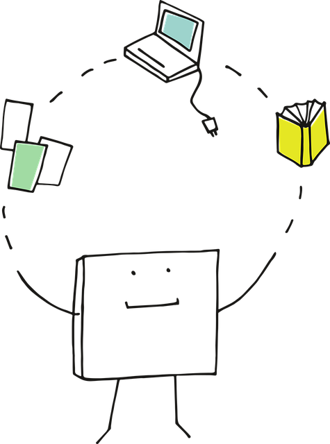
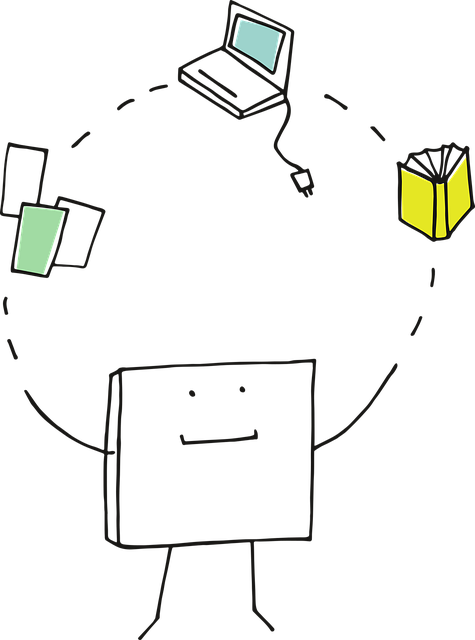

運動！
"just a little hiccup in our usual wonderful service"

子供の頃は、競争があるプレッシャーから
運動を好きになれなかったかもしれない。
今は、ただ楽しいから続けたい、そんな存在になります♪
その素晴らしい効果「ランニングハイ」
積極的な気分転換に、服装やシューズを選んで、気分を上げて。
クーラーの効いた部屋に置いたランニングマシンで。

脱水予防に、水を飲んでから。
10分走って20分歩いたって良い。
BMI30以上の過体重の方は、膝を痛めないようにプールで浮力を利用して歩く。
内臓脂肪を減らすために、１週間に、トータル150分、運動して下さい。
運動を好きになれなかったかもしれない。
今は、ただ楽しいから続けたい、そんな存在になります♪
その素晴らしい効果「ランニングハイ」
積極的な気分転換に、服装やシューズを選んで、気分を上げて。
クーラーの効いた部屋に置いたランニングマシンで。

脱水予防に、水を飲んでから。
10分走って20分歩いたって良い。
BMI30以上の過体重の方は、膝を痛めないようにプールで浮力を利用して歩く。
内臓脂肪を減らすために、１週間に、トータル150分、運動して下さい。